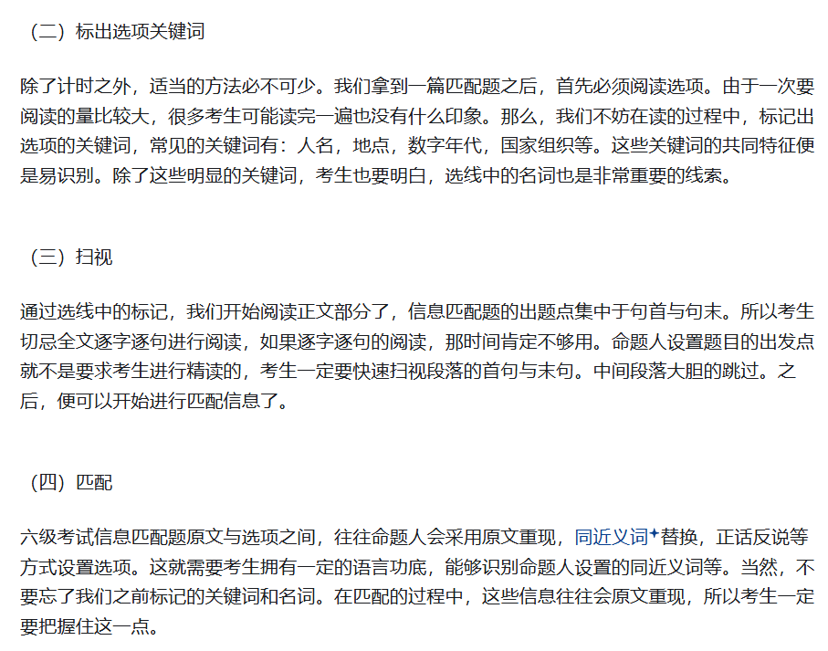
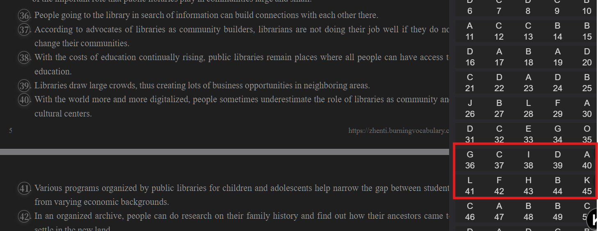
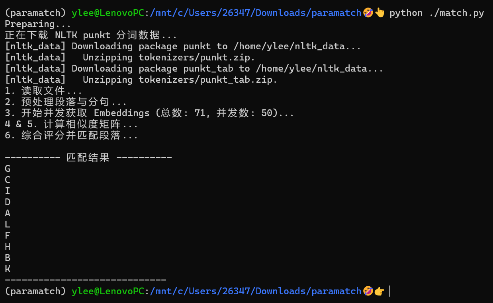
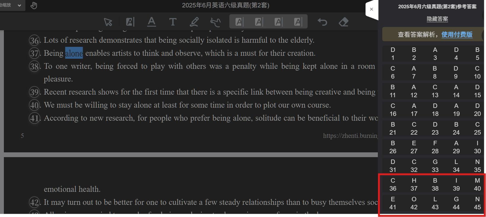
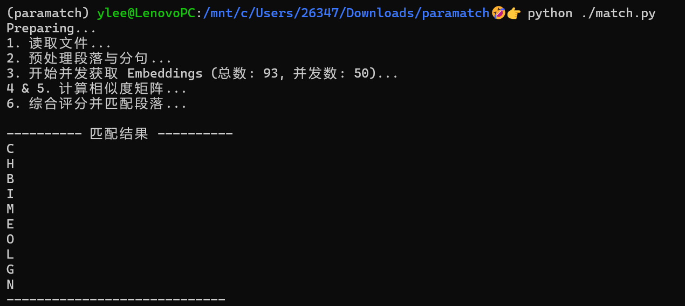
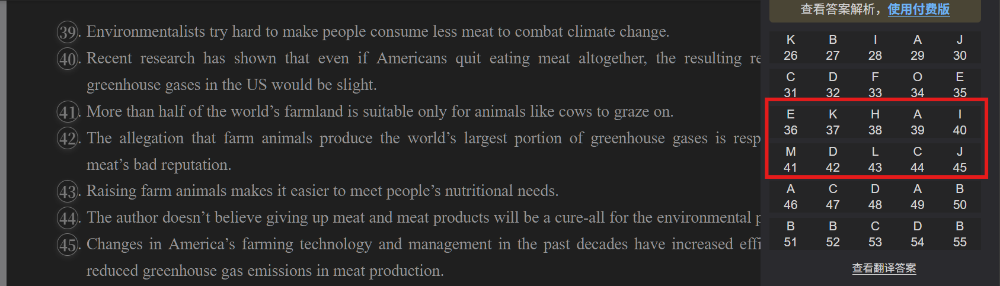
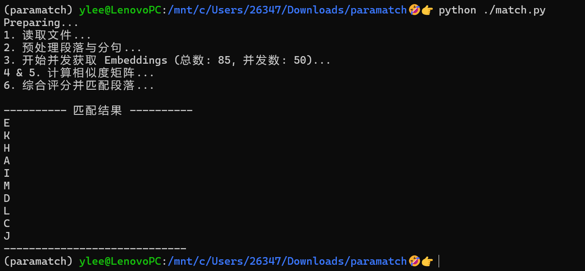

如何做四六级考试的段落匹配题
📖 阅读信息
阅读时间约 7 分钟 | 约 1107 字 | 约 8 个公式 | 约 157 行代码
这篇文章真的在教你以一个非常高效的方法完成这类题目。
写这么长谁读得懂啊？
做过英语四六级试卷的同学都知道，试卷的 Section B：Information Matching（长篇阅读/段落匹配） 是一个体力活。
文章有17~18个段落，经常要占 3 页纸的篇幅，后面跟着 10 个句子，要求你找出每个句子出自哪一段。
网上给出了很多做法，比如：

但是要是我给所有的关键词都换一个说法，这不就没意义了嘛！出题人最喜欢的套路就是：
- 同义替换：题目里的词在文章里找不到，换成了意思相近的词。
- 概括总结：题目是对某一段落大意的总结，而不是原句重现。
- 信息干扰：好几个段落都出现了类似的关键词，容易选错。
更何况这不是一种“做法”，它只告诉你要看关键词，除此之外没有说明做的顺序，怎么进行匹配，等等。
也就是说，这类型题目的一个难点就是——写这么长谁读得懂啊？
让机器读就行了啊🤓
嗯，我不是用 LLM 或者专精推理的 LRM。尽管这个任务非常类似于极简版的“大海捞针”测试，但使用 LLM 就是高射炮打蚊子了。为了解决这个问题，直接用文本嵌入就行了。
简单来说，Embedding 可以将一段文本（句子或段落）转化成一个高维的向量（一串数字）。在这个向量空间中，语义越相似的文本，距离越近。
这意味着：即使题目是 "The initial plan failed"，文章原句是 "Their first attempt was unsuccessful"，虽然没有单词重合，但它们的向量距离会非常近！
从读懂到会做题
那么具体怎么利用这个嵌入信息来做题呢？我们考虑两种情况：
- 提取出来的句子是对原词原句的改写——这样，对原文某一句的相似度会很高。
- 提取出来的句子概括了段落大意——这样对原文某一段的相似度会很高。
下面是具体的算法流程：
1. 数据预处理
首先，我们将文章读取进来，利用 Python 的 nltk 库，做两层切割：
* 段落层：将文章切分成 Paragraph A, B, C...
* 句子层：将每个段落进一步切分成句子集合 \(S\)。
* 同时，读取题目给出的 10 个句子，记为集合 \(T\)。
2. 并发向量化
利用任何一个 OpenAI 兼容的 API 做调用，我使用了 Qwen3-Embedding-8B 模型（目前硅基平台上面参数量最大的嵌入模型）。为了保证速度，代码开启了并发。
3. 匹配算法
根据上面的讨论，简单地寻找相似度最高的句子不一定搞得定，需要结合了两个维度：
第一步是做句子的层面匹配。这一步计算题目句子 \(t\) 与文章中每一个句子的语义相似度。也就是模拟我们做题时寻找“原句改写”的过程。如果某一段里有一个句子和题目极度相似，那么这一段的得分就该很高。可以按照下面的式子进行计算： \(\mathrm{Score}_{1}(\mathrm{Para}_k) = \max(\mathrm{Similarity}(t, s))\)，其中 \(s \in \mathrm{Para}_k\)。
第二步是做段落层面的匹配。这一步计算题目句子 \(t\) 与整段文本的语义相似度。也就是模拟了我们做题时寻找“段落大意”的过程。有时候题目是对全段的总结，单看某一句话匹配度不高，但看整体就非常吻合。这一步的计算式子是 \(\mathrm{Score}_{2}(\mathrm{Para}_k) = \mathrm{Similarity}(t, \mathrm{Para}_k)\)。
4. 综合决策
最终，对于每一个题目，我们计算每个段落的综合得分：
\[
S(k) = \mathrm{Score}_{1}(\mathrm{Para}_k)+\mathrm{Score}_{2}(\mathrm{Para}_k)
\]
这里可以根据出题风格调一下加权系数，不过保持默认的表现就已经很好了。最后得分最高的那个段落，就是我们的答案。
代码实现
下面给出了完整的代码：
| # 需要的库： pip install requests numpy scikit-learn nltk
# 在 passage.txt 内填入阅读原文，以 \n\n 分段
# 在 sentences.txt 内填入待处理的句子，用 \n\n 分开
# 然后运行！
import os
import requests
import json
import numpy as np
import nltk
from concurrent.futures import ThreadPoolExecutor
from sklearn.metrics.pairwise import cosine_similarity
# ================= 配置区域 =================
# 请在此处填入你的 API Key
API_KEY = "sk-*******"
# 请在此处填入模型名称 (例如: BAAI/bge-m3, BAAI/bge-large-en-v1.5 等)
MODEL_NAME = "Qwen/Qwen3-Embedding-8B"
# 并发数设置
CONCURRENCY = 50
# 兼容 OpenAI 格式 API 地址
API_URL = "https://api.siliconflow.cn/v1/embeddings"
# ===========================================
def download_nltk_data():
"""下载必要的分句数据"""
try:
nltk.data.find('tokenizers/punkt')
except LookupError:
print("正在下载 NLTK punkt 分词数据...")
nltk.download('punkt')
nltk.download('punkt_tab')
def get_embedding(text):
"""
调用 SiliconFlow API 获取文本嵌入向量
"""
headers = {
"Authorization": f"Bearer {API_KEY}",
"Content-Type": "application/json"
}
# 移除换行符，防止影响 Embedding 质量
clean_text = text.replace("\n", " ")
payload = {
"model": MODEL_NAME,
"input": clean_text
}
try:
response = requests.post(API_URL, json=payload, headers=headers, timeout=30)
response.raise_for_status()
data = response.json()
return data['data'][0]['embedding']
except Exception as e:
print(f"Error getting embedding for text: {clean_text[:30]}... : {e}")
# 如果失败返回全0向量防止程序崩溃（实际生产中应重试）
return None
def read_files():
"""读取文件内容"""
try:
with open('passage.txt', 'r', encoding='utf-8') as f:
passage_text = f.read().strip()
with open('sentences.txt', 'r', encoding='utf-8') as f:
sentences_text = f.read().strip()
return passage_text, sentences_text
except FileNotFoundError as e:
print(f"错误: 找不到文件 - {e}")
exit(1)
def main():
# 0. 准备工作
print("Preparing...")
download_nltk_data()
if API_KEY == "YOUR_SILICONFLOW_API_KEY_HERE":
print("请在代码中设置正确的 API_KEY")
return
# 1. 读取文件
print("1. 读取文件...")
passage_raw, sentences_raw = read_files()
# 处理 passage.txt: 按 \n\n 分割段落
paragraphs = [p.strip() for p in passage_raw.split('\n\n') if p.strip()]
# 处理 sentences.txt: 按 \n\n 分割句子 (集合 T)
t_sentences = [s.strip() for s in sentences_raw.split('\n\n') if s.strip()]
# 2. 将段落分句得到集合 S，并记录所属段落索引
print("2. 预处理段落与分句...")
s_data = [] # 存储格式: {'text': sentence, 'para_idx': int}
for idx, para in enumerate(paragraphs):
# 使用 nltk 进行英文分句
sents = nltk.sent_tokenize(para)
for s in sents:
s_data.append({'text': s, 'para_idx': idx})
# 3. 准备所有需要 Embedding 的文本列表
#我们需要 Embed: T 中的句子, S 中的句子, 以及原段落(用于步骤5)
all_texts_to_embed = []
# 映射索引范围
t_range = range(0, len(t_sentences))
start_s = len(t_sentences)
s_range = range(start_s, start_s + len(s_data))
start_p = start_s + len(s_data)
p_range = range(start_p, start_p + len(paragraphs))
all_texts_to_embed.extend(t_sentences)
all_texts_to_embed.extend([item['text'] for item in s_data])
all_texts_to_embed.extend(paragraphs)
print(f"3. 开始并发获取 Embeddings (总数: {len(all_texts_to_embed)}, 并发数: {CONCURRENCY})...")
embeddings_map = {}
# 使用 ThreadPoolExecutor 并发调用接口
with ThreadPoolExecutor(max_workers=CONCURRENCY) as executor:
# 提交所有任务
futures = {executor.submit(get_embedding, text): i for i, text in enumerate(all_texts_to_embed)}
# 收集结果（保持顺序）
results = [None] * len(all_texts_to_embed)
for future in futures:
idx = futures[future]
res = future.result()
if res is None:
print("获取 Embedding 失败，程序终止。")
return
results[idx] = res
# 分离 Embedding 向量
t_embeddings = np.array(results[:len(t_sentences)])
s_embeddings = np.array(results[start_s:start_s + len(s_data)])
p_embeddings = np.array(results[start_p:])
print("4 & 5. 计算相似度矩阵...")
# 计算 T vs S 的相似度矩阵 (Shape: len(T) x len(S))
sim_t_s = cosine_similarity(t_embeddings, s_embeddings)
# 计算 T vs Paragraphs 的相似度矩阵 (Shape: len(T) x len(Paragraphs))
sim_t_p = cosine_similarity(t_embeddings, p_embeddings)
print("6. 综合评分并匹配段落...")
final_results = []
num_paras = len(paragraphs)
for i in range(len(t_sentences)):
# --- 步骤 4 逻辑 ---
# 找出当前 T 句子与 S 集合中相似度最高的那个句子，并获取其所属段落
# 这里我们不只取最大值，而是计算“基于句子的段落得分”
# 策略：对于每个段落，找出该段落中与当前 T 句子相似度最高的那个句子的得分
# 初始化该 T 句子针对每个段落的句子匹配最高分
best_sentence_score_per_para = np.zeros(num_paras)
# 遍历所有 S 句子及其相似度
for j, score in enumerate(sim_t_s[i]):
p_idx = s_data[j]['para_idx']
if score > best_sentence_score_per_para[p_idx]:
best_sentence_score_per_para[p_idx] = score
# --- 步骤 5 逻辑 ---
# 当前 T 句子与段落集合的直接相似度
direct_para_scores = sim_t_p[i]
# --- 步骤 6 综合逻辑 ---
# 综合评分策略：直接相加 (或者加权相加)
# Final Score(Para k) = Sim(T, Para k) + Max(Sim(T, Sentence in Para k))
# 这种方法既考虑了宏观语义(段落级)，也考虑了微观细节(句子级)
combined_scores = direct_para_scores + best_sentence_score_per_para
# 找到综合得分最高的段落索引
best_para_idx = np.argmax(combined_scores)
# 转换为字母 (0->A, 1->B)
para_letter = chr(ord('A') + best_para_idx)
final_results.append(para_letter)
# 7. 输出结果
print("\n---------- 匹配结果 ----------")
for res in final_results:
print(res)
print("-----------------------------")
if __name__ == "__main__":
main()
|
实测
我用2025年6月英语六级考试的三套卷子做了一个简单的测试。






结果很棒！这个算法获得了满分。
我同时也在一些商业 LRM 上测试了题目。我测试的提示词是
| 做段落匹配题目，文章：{passage.txt} 句子：{sentence.txt} 给出答案。不要用数字进行段落编号，用英文字母，如A=1
|
除了 Deepseek 第三篇做错了一道以外，其他的 LRM 都是满分。所以泛化是很恐怖的，The bitter lesson 还在追我。
笔者考完六级有感而发。
📝 如果您需要引用本文
Yan Li. (Dec. 13, 2025). 如何做四六级考试的段落匹配题 [Blog post]. Retrieved from https://dicaeopolis.github.io/DNN/match
在 BibTeX 格式中：
| @online{match,
title={如何做四六级考试的段落匹配题},
author={Yan Li},
year={2025},
month={Dec},
url={\url{https://dicaeopolis.github.io/DNN/match}},
}
|